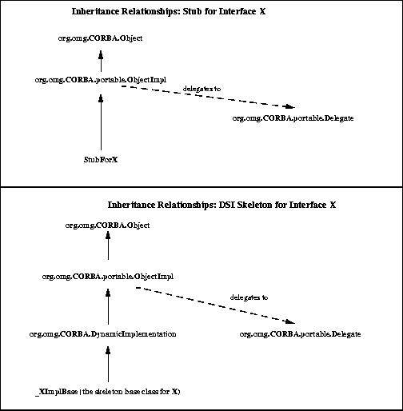

Java ORB Portability Interfaces
8

Java ORB Portability Interfaces |
8 |
|
org.omg.CORBA.portable packageThe portability package contains interfaces and classes that are designed for and intended to be used by ORB implementors. It exposes the publicly defined APIs that are used to connect stubs and skeletons to the ORB.
All stubs shall inherit from a common base class
org.omg.CORBA.portable.ObjectImpl. The
class is responsible for delegating shared functionality such as is_a()
to the vendor specific implementation. This model provides for a
variety of vendor dependent implementation choices, while reducing the
client-side and server "code bloat".All DSI-based skeletons inherit from
org.omg.CORBA.DynamicImplementation.

package org.omg.CORBA.portable;
public interface Streamable {
void _read(org.omg.CORBA.portable.InputStream
istream);
void _write(org.omg.CORBA.portable.OutputStream
ostream);
org.omg.CORBA.TypeCode _type();
}
The streaming APIs are found in the
org.omg.CORBA.portable package.The ORB object is used as a factory to create an output stream. An input stream may be created from an output stream.
package org.omg.CORBA;
interface ORB {
OutputStream create_output_stream();
};
package org.omg.CORBA.portable;
public abstract class InputStream {
public abstract boolean read_boolean();
public abstract char read_char();
public abstract char read_wchar();
public abstract byte read_octet();
public abstract short read_short();
public abstract short read_ushort();
public abstract int read_long();
public abstract int read_ulong();
public abstract long read_longlong();
public abstract long read_ulonglong();
public abstract float read_float();
public abstract double read_double();
public abstract String read_string();
public abstract String read_wstring();
public abstract void read_boolean_array(boolean[] value,
int offset, int length);
public abstract void read_char_array(char[] value,
int offset, int length);
public abstract void read_wchar_array(char[] value,
int offset, int length);
public abstract void read_octet_array(byte[] value,
int offset, int length);
public abstract void read_short_array(short[] value,
int offset, int length);
public abstract void read_ushort_array(short[] value,
int offset, int length);
public abstract void read_long_array(int[] value,
int offset, int length);
public abstract void read_ulong_array(int[] value,
int offset, int length);
public abstract void read_longlong_array(long[] value,
int offset, int length);
public abstract void read_ulonglong_array(long[] value,
int offset, int length);
public abstract void read_float_array(float[] value,
int offset, int length);
public abstract void read_double_array(double[] value,
int offset, int length);
public abstract org.omg.CORBA.Object read_Object();
public abstract org.omg.CORBA.TypeCode read_TypeCode();
public abstract org.omg.CORBA.Any read_any();
public abstract org.omg.CORBA.Principal read_Principal();
}
public abstract class OutputStream {
public abstract InputStream create_input_stream();
public abstract void write_boolean(boolean value);
public abstract void write_char(char value);
public abstract void write_wchar(char value);
public abstract void write_octet(byte value);
public abstract void write_short(short value);
public abstract void write_ushort(short value);
public abstract void write_long(int value);
public abstract void write_ulong(int value);
public abstract void write_longlong(long value);
public abstract void write_ulonglong(long value);
public abstract void write_float(float value);
public abstract void write_double(double value);
public abstract void write_string(String value);
public abstract void write_wstring(String value);
public abstract void write_boolean_array(boolean[] value,
int offset, int length);
public abstract void write_char_array(char[] value,
int offset, int length);
public abstract void write_wchar_array(char[] value,
int offset, int length);
public abstract void write_octet_array(byte[] value,
int offset, int length);
public abstract void write_short_array(short[] value,
int offset, int length);
public abstract void write_ushort_array(short[] value,
int offset, int length);
public abstract void write_long_array(int[] value,
int offset, int length);
public abstract void write_ulong_array(int[]value,
int offset, int length);
public abstract void write_longlong_array(long[]value,
int offset, int length);
public abstract void write_ulonglong_array(long[] value,
int offset, int length);
public abstract void write_float_array(float[] value,
int offset, int length);
public abstract void write_double_array(double[]value,
int offset, int length);
public abstract void write_Object(org.omg.CORBA.Object value);
public abstract void write_TypeCode(org.omg.CORBA.TypeCode value);
public abstract void write_any(org.omg.CORBA.Any value);
public abstract void write_Principal(org.omg.CORBA.Principal value);
}
The method _ids() returns an array of repository ids that an object implements. The string at the zero index shall represent the most derived interface. The last id, for the generic CORBA object (i.e. "IDL:omg.org/CORBA/Object:1.0"), is implied and not present.
package org.omg.CORBA.portable;
abstract public class ObjectImpl implements
org.omg.CORBA.Object {
private Delegate __delegate;
public Delegate _get_delegate() {
if (__delegate == null) {
throw new org.omg.CORBA.BAD_OPERATION();
}
return _delegate;
}
public void _set_delegate(Delegate delegate) {
__delegate = delegate;
}
public abstract String[] _ids() {...}
// methods for standard CORBA stuff
public org.omg.CORBA.ImplementationDef
_get_implementation() {
return _get_delegate().get_implementation(this);
}
public org.omg.CORBA.InterfaceDef
_get_interface() {
return _get_delegate().get_interface(this);
}
public org.omg.CORBA.Object _duplicate() {
return _get_delegate().duplicate(this);
}
public void _release() {
_get_delegate().release(this);
}
public boolean _is_a(String repository_id) {
return _get_delegate().is_a(this, repository_id);
}
public boolean _is_equivalent(org.omg.CORBA.Object rhs) {
return _get_delegate().is_equivalent(this, rhs);
}
public boolean _non_existent() {
return _get_delegate().non_existent(this);
}
public int _hash(int maximum) {
return _get_delegate().hash(this, maximum);
}
public org.omg.CORBA.Request _request(String operation) {
return _get_delegate().request(this, operation);
}
public org.omg.CORBA.Request _create_request(
org.omg.CORBA.Context ctx,
String operation,
org.omg.CORBA.NVList arg_list,
org.omg.CORBA.NamedValue result) {
return _get_delegate().create_request(this, ctx,
operation, arg_list, result);
}
public Request _create_request(
org.omg.CORBA.Context ctx,
String operation,
org.omg.CORBA.NVList arg_list,
org.omg.CORBA.NamedValue result,
org.omg.CORBA.ExceptionList exceptions,
org.omg.CORBA.ContextList contexts) {
return _get_delegate().create_request(this, ctx, operation,
arg_list, result,exceptions, contexts);
}
}
// Java
package org.omg.CORBA.portable;
public abstract class Delegate {
public abstract org.omg.CORBA ImplementationDef get_implementation(
org.omg.CORBA.Object self);
public abstract org.omg.CORBA.InterfaceDef get_interface(
org.omg.CORBA.Object self);
public abstract org.omg.CORBA.Object duplicate(
org.omg.CORBA.Object self);
public abstract void release(org.omg.CORBA.Object self);
public abstract boolean is_a(org.omg.CORBA.Object self,
String repository_id);
public abstract boolean non_existent(org.omg.CORBA.Object self);
public abstract boolean is_equivalent(org.omg.CORBA.Object self,
org.omg.CORBA.Object rhs);
public abstract int hash(org.omg.CORBA.Object self,
int max);
public abstract org.omg.CORBA.Request request(org.omg.CORBA.Object self,
String operation);
public abstract org.omg.CORBA.Request create_request(
org.omg.CORBA.Object self,
org.omg.CORBA.Context ctx,
String operation,
org.omg.CORBA.NVList arg_list,
org.omg.CORBA.NamedValue result);
public abstract org.omg.CORBA.Request create_request(
org.omg.CORBA.Object self,
org.omg.CORBA.Context ctx,
String operation,
org.omg.CORBA.NVList arg_list,
org.omg.CORBA.NamedValue result,
org.omg.CORBA.ExceptionList excepts,
org.omg.CORBA.ContextList contexts);
}
See Section 7.2.2, "Servant Class" for more information.
8.8 ORB Initialization
The ORB class represents an implementation of a CORBA ORB. Vendors
specific ORB implementations can extend this class to add new
features.
|
Property Name |
Property Value |
|
org.omg.CORBA.ORBClass |
class name of an ORB implementation |
|
org.omg.CORBA.ORBSingletonClass |
class name of the singleton ORB implementation |
8.8.2 ORB Initialization Methods
There are three forms of initialization as shown below. In addition the
actual ORB implementation (subclassed from
ORB) must implement the
set_parameters() methods so that the
initialization parameters will be passed into the ORB from the
initialization methods.// Java
package org.omg.CORBA;
abstract public class ORB {
// Application init
public static ORB init(String[] args,
java.util.Properties props) {
// call to: set_parameters(args, props);
...
}
// Applet init
public static ORB init(java.applet.Applet app,
java.util.Properties props) {
// call to: set_parameters(app, props);
...
}
// Default (singleton) init
public static ORB init()
{...}
// Implemented by subclassed ORB implementations
// and called by init methods to pass in their params
abstract protected void set_parameters(String[] args,
java.util.Properties props);
abstract protected void set_parameters(Applet app,
java.util.Properties props);
}
8.8.2.1 Default initialization
The default initialization method returns the singleton ORB. If called
multiple times it will always return the same the Java object.ORB.init() is to provide a factory for
TypeCodes for use by Helper classes implementing the
type() method, and to create Any
instances that are used to describe union labels as part of creating a
union TypeCode. These Helper classes may be baked-in
to the browser (e.g. for the interface repository stubs or other wildly
popular IDL) and so may be shared across untrusted applets downloaded
into the browser. The returned ORB instance is shared across all
applets and therefore must have sharply restricted capabilities so that
unrelated applets can be isolated from each other. It is not intended
to be used directly by applets. Therefore, the ORB returned by
ORB.init(), if called from a Java applet,
may only be used to create Typecodes. An attempt to
invoke other "regular" ORB operations shall raise a system
exception. 8.8.2.2 Application initialization
The application initialization method should be used from a stand-alone
Java application. It is passed a array of strings which are the command
arguments and a list of Java properties. Either the argument array or
the properties may be null. 8.8.2.3 Applet initialization
The applet initialization method should be used from an applet. It is
passed "the applet" and a list of Java properties. Either the
applet or the properties may be null.